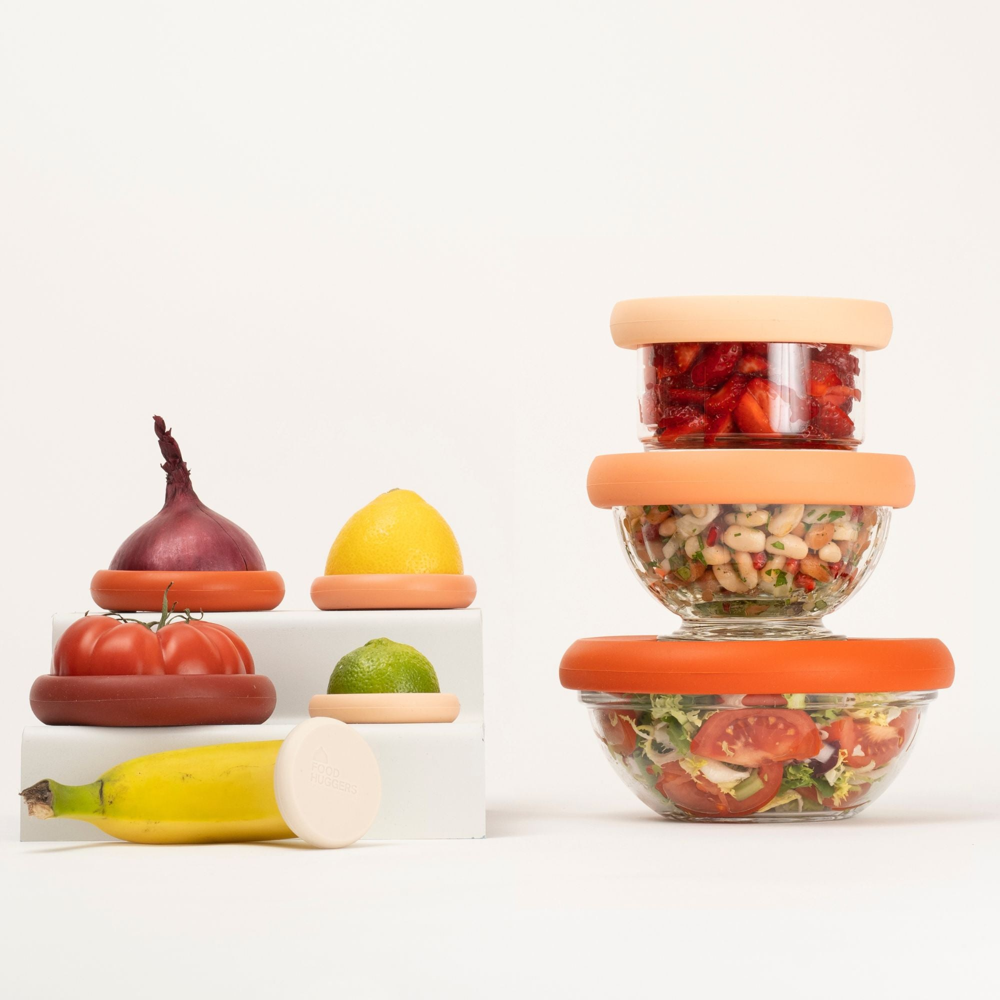
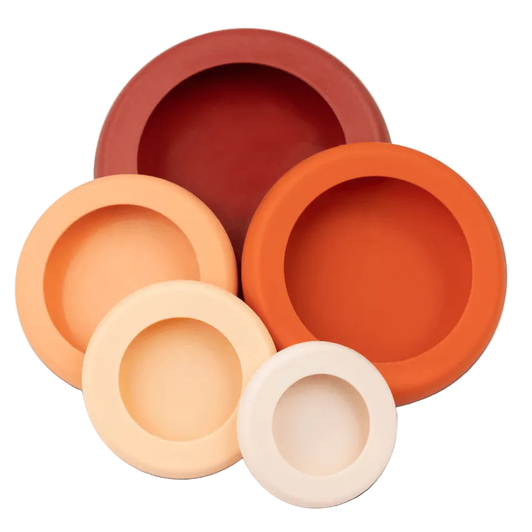
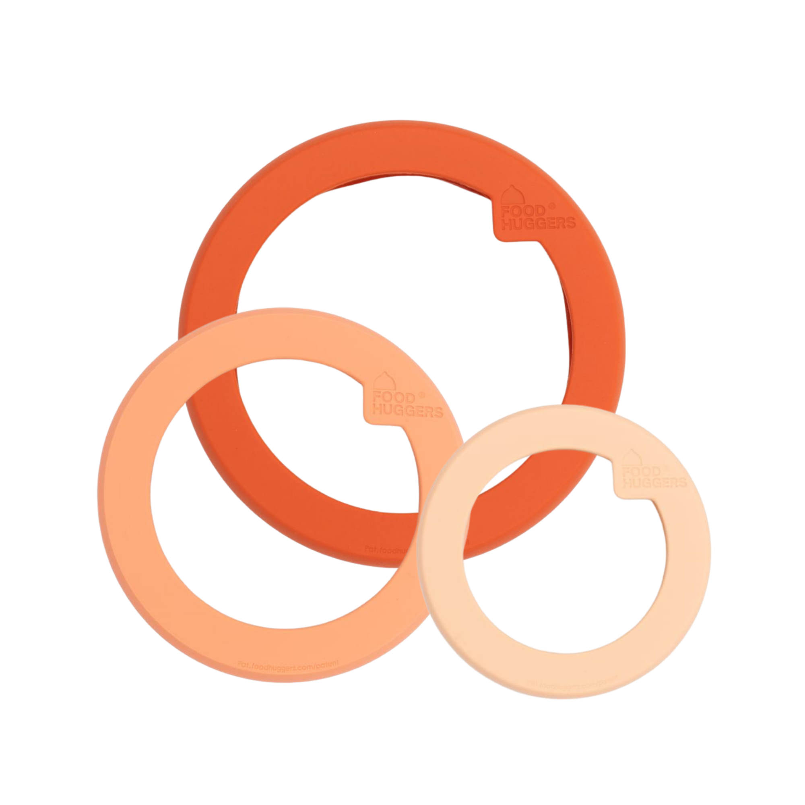
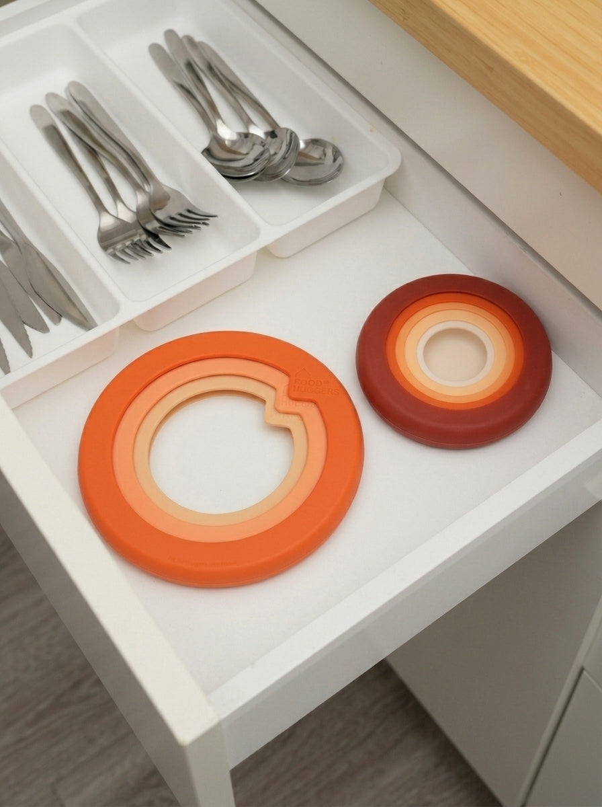
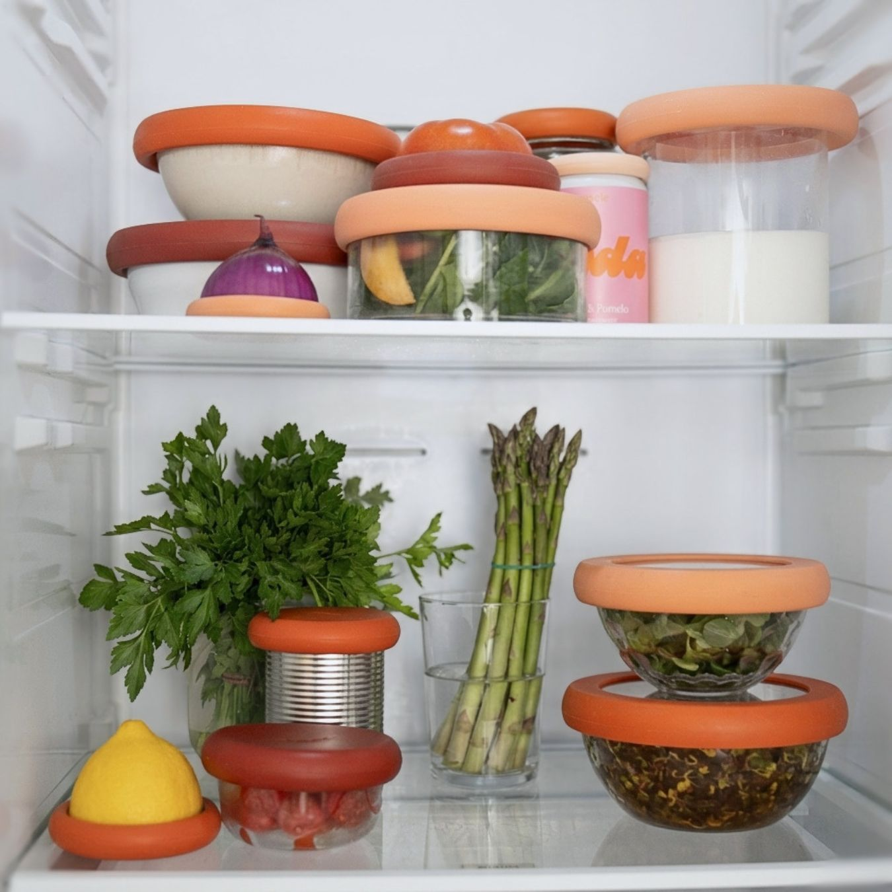
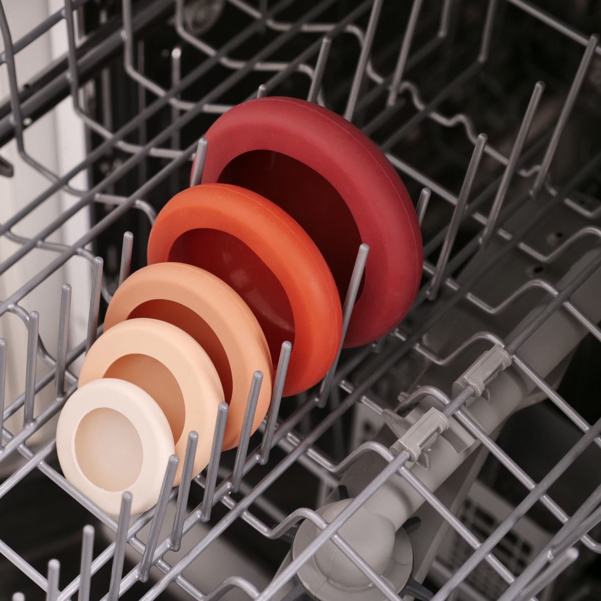
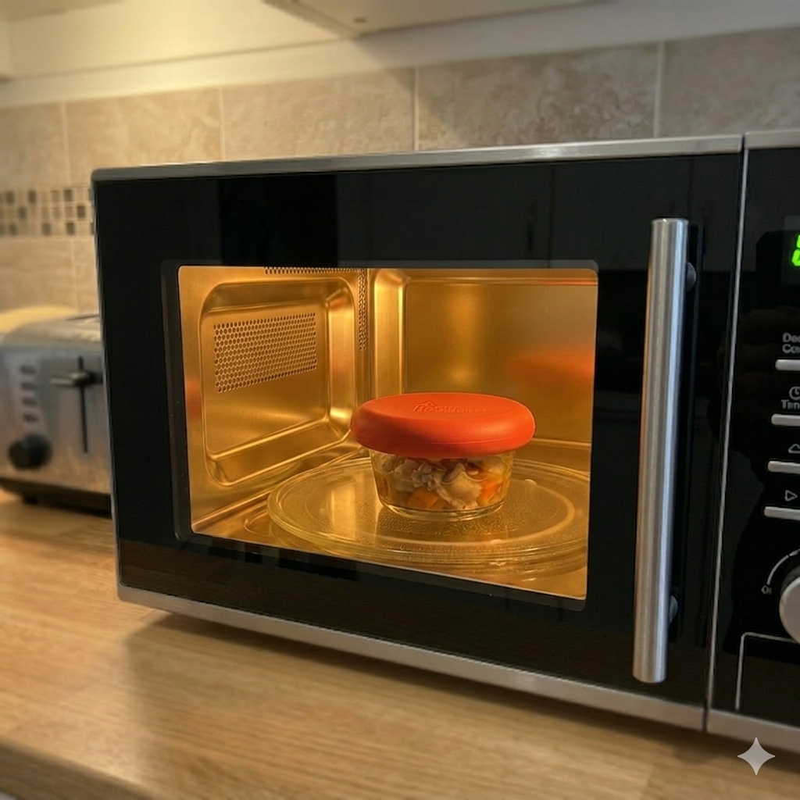
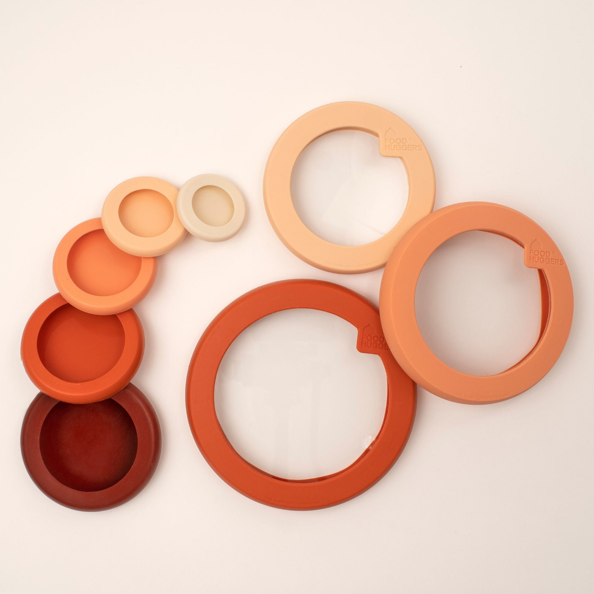
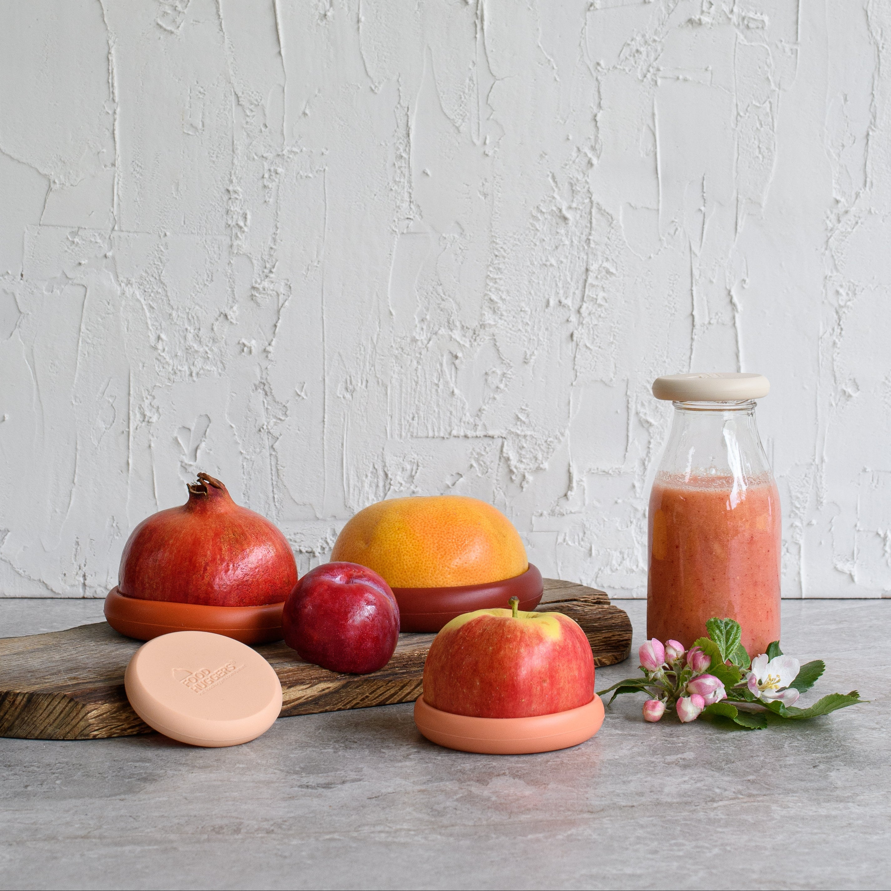

1
ラップ代がかからない
一度買えば何度でも使えるから、ラップの買い足しや切り直しの手間がなくなります。
シリコン保存カバー｜何度でも使える
切った野菜や開けた缶詰に、はめるだけ。
毎日の保存が、ぐっとラクになります。
※ 食洗機・電子レンジ対応（200℃まで耐熱）
毎日のキッチンで、小さなストレスが積み重なっていませんか。Food Huggersは、そんな「当たり前」の不便をやさしく解決します。

難しい操作はいりません。はめるだけで、毎日の保存が変わります。
一度買えば何度でも使えるから、ラップの買い足しや切り直しの手間がなくなります。
切った野菜や缶詰にそのままはめるだけ。面倒な準備や片付けがいりません。
重ねて収納でき、中身も見やすい。探す手間が減り、食材の無駄も防げます。

切った野菜・果物、開けた缶詰に。特許取得の「ハグ構造」で、しっかり密閉して鮮度をキープします。

お持ちのボウルや容器が、そのまま保存容器に。フタが合わないストレスから解放されます。

切り口にぴったりフィット

重ねて収納、探す手間なし

食器と一緒に洗えて楽ちん

200℃まで耐熱、冷凍も可

特別8サイズセット
野菜の保存から、ボウルのフタ代わりまで。キッチンで必要なサイズが、これひとつで揃います。
※ 写真のボウル（容器）はセットに含まれません
説明書を読み込む必要はありません。はめるだけの3ステップです。
食材や容器に合わせて、ぴったりのサイズを選びます。
切り口や容器の上に、そのままかぶせるだけ。
そのまま冷蔵庫へ。あとは食洗機で洗って繰り返し使えます。
アメリカをはじめ世界各国で愛用されています。
★★★★★「タッパーの数が減って冷蔵庫がすっきり。ラップを切る手間もなくなり、毎日の料理が本当に楽になりました。」
— 50代・主婦
★★★★★「使いかけの野菜が並んでいる冷蔵庫の方が、ずっときれいに見えます。食洗機に入れられるのも助かります。」
— 60代・パート勤務
★★★★★「娘へのプレゼントに贈りました。『こういうの欲しかった』と喜ばれて、自分用にも追加で買いました。」
— 50代・会社員

引越しや誕生日の贈り物に。お菓子やお花とは違う、実用的でセンスのいいキッチンギフトとして人気です。
発売決定時に先行案内をお届けします。LINE登録は無料、いつでも解除できます。
※ 本ページは制作デモです。ボタンリンクはクライアント様にて差し替えください。